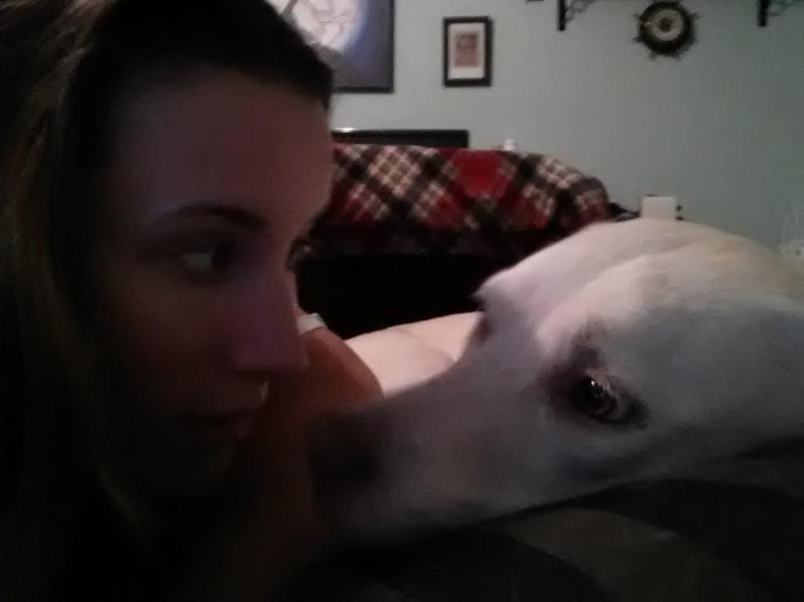

Happy Tails Home!
Welcome to Happy Tails Dog Central!
Mission:
Happy Tails Dog Central is a website dedicated to dogs and their human friends. This site aims to provide dog lovers within the Saint Louis, Missouri area with helpful information. We aim to provide our users with information regarding upcoming events, area shops, dog parks, and fun social media sites to check out (for dog-lovers, of course!) We hope to give useful and precise information to ensure happy tails!
About Me:
Hello! My name is Angelica, and I'm the creator of Happy Tails Dog Central! I currently reside in Saint Louis, Missouri and LOVE dogs! This site is created and maintained by me! I came up with the idea for Happy Tails Dog Central after rummaging the internet for years to find events, locate shops and parks, I decided to create a one-stop shop! Hopefully you will find this site as convenient as I do! I'm always looking for new events to take my dog to, and parks for us to try out. My dog is Rukia, a lab/husky mix. She's 3 years old and loves to go on adventures! Feel free to peruse my site and find new experiences for you and your dog to enjoy!
